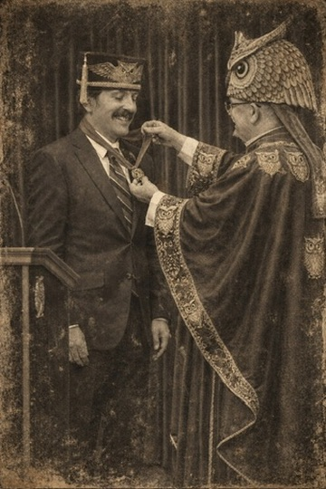

The TFA USA Chapter coordinates national guidance, chapter programming, and event fairness support for trivia hosts, leagues, and competitors across the United States.
Built to support local trivia communities while aligning them with broader TFA standards for fair play, credible questions, and transparent review.
Purpose
The USA Chapter serves as the primary liaison between the international TFA structure and United States-based trivia organizations. It helps local leagues adapt TFA policies to regional formats, venues, and competition norms while preserving consistency in enforcement and review.
Scope
The chapter supports independent pub trivia, collegiate circuits, invitational tournaments, nonprofit knowledge bowls, and private championship events operating within the United States.
History of the USA Chapter

Archival image included with the USA Chapter historical record.
Origins in Germany
In the late 1920s and early 1930s, small intellectual circles in Germany, often meeting in cafes, lecture halls, and smoky back rooms, began organizing informal knowledge competitions. These gatherings, sometimes referred to as Vereinigung fur faires Wissen (Association for Fair Knowledge), were part salon, part game, and part philosophical exercise.
At their center was a growing frustration: arguments over answers were constant, sources were inconsistent, and confidence often outweighed correctness.
From these frustrations emerged an early philosophy: Knowledge, to be meaningful in competition, must be fairly governed.
Among those influenced by these circles was a young and meticulous thinker named Wolfgang Zingelmann. He absorbed their principles, structure, verification, and fairness, and carried them with him as Europe descended into turmoil.
By the time Wolfgang left Germany, the early foundations of what would become the Trivia Fairness Association (TFA) already existed: informal, fragmented, but deeply rooted in the idea that truth required stewardship.
Arrival in America
When Wolfgang arrived in New York in the early 1940s, he found a country rich with trivia but lacking the structure he believed it needed.
Radio quiz shows were booming. Pub-style competitions were emerging. But there were no consistent standards. Disputes were settled arbitrarily. Hosts ruled by instinct, not evidence.
To Wolfgang, it felt familiar, like Germany before the idea of fair knowledge had taken hold.
But this time, he intended to formalize it.
The First U.S. Chapter (1943)
On March 17, 1943, in the back room of a Midtown Manhattan beer hall, Wolfgang convened a small group of like-minded individuals: a radio writer, a librarian, two servicemen, a teacher, a crossword enthusiast, and a stage actor.
This meeting marked the founding of the first official U.S. chapter of the Trivia Fairness Association (TFA), not the birth of the idea, but its first formal expansion beyond Germany.
There was still no official logo. No incorporation. No recognition.
But there was a clear purpose: To bring the principles of faires Wissen into American trivia culture.
That night, Wolfgang stood and delivered what would later be remembered as the First Fairness Address:
A question is a contract. A player gives trust. The host must return truth.
Formalizing the Philosophy
Drawing directly from the German foundations, the group drafted the Charter for Fair Trivia Practice, adapting earlier European ideas into a more structured framework.
It introduced principles that would define the TFA moving forward:
Verifiability - Answers must be supported by credible sources
Clarity - Questions must avoid misleading phrasing
Consistency - Judging must follow stable standards
Appealability - Disputes must have a formal review process
While these ideas had existed informally in Germany, the U.S. chapter marked the first time they were written, organized, and actively applied.
Growth During Wartime
By late 1943, the TFA's influence began to spread quietly through American radio circles. Producers started consulting Wolfgang and his group to vet questions before broadcast.
Some resisted. Others mocked the need for oversight.
But audiences began to notice a difference.
Shows associated with TFA principles had fewer disputes, clearer rulings, and, most importantly, greater trust.
In a time defined by uncertainty, trust carried weight.
The Owl as a Symbol
The owl, now synonymous with the TFA, also traces back to these early transatlantic roots.
While the concept of the owl as a symbol of knowledge existed in both European and American traditions, it was during a 1943 meeting in New York that it became formally associated with the TFA. A quick sketch during a debate over a disputed question evolved into a lasting emblem.
Wolfgang embraced it immediately:
The owl does not guess. It sees.
From then on, the owl marked official TFA correspondence, linking the organization's German origins with its American future.
A Transatlantic Legacy
By the end of World War II, the Trivia Fairness Association existed in two forms:
Its informal intellectual roots in Germany, where the philosophy of fair knowledge was born
Its structured, operational presence in the United States, where those ideas were formalized and expanded
The American chapter did not replace the German origins, it extended them.
What began as scattered conversations in European cafes became, through Wolfgang Zingelmann's efforts, a growing institution.
Not powerful. Not official. But influential in a way that mattered.
Enduring Impact
Wolfgang himself rarely claimed credit. He viewed the TFA not as an invention, but as a continuation, something that had started before him and would continue long after.
But those who sat in that Midtown room in 1943 understood what had happened.
An idea had crossed an ocean.
And in doing so, it had found its structure.
From that point on, trivia, on both sides of the Atlantic, would never be quite as chaotic again.
Core Responsibilities
Standards Alignment
Translates TFA governance, question review practices, and event integrity expectations into clear guidance for U.S. organizers and hosts.
Regional Certification
Assists leagues and tournaments seeking recognition as TFA-aligned events and supports corrective action when competitions fall short of published standards.
Dispute Escalation
Provides an initial review channel for local scoring disputes, procedural complaints, and conduct concerns before matters move to broader TFA review.
Host Education
Distributes practical guidance on question writing, answer validation, accessibility, pacing, and player communication for recurring events.
Chapter Priorities
Improve consistency across independent trivia nights and regional tournament formats
Promote stronger sourcing and verification standards for question sets
Encourage clear appeals processes and documented rulings
Support player trust through transparent host procedures
Expand awareness of accessibility and inclusion in competition design
Who the Chapter Works With
Venue-based trivia hosts and independent quiz companies
University and student-led quiz organizations
Tournament directors and event staff
Players, captains, and league administrators
Regional advisory boards and international TFA committees
Regional Support Model
The USA Chapter organizes its work through regional coordination so local concerns can be addressed with context. This allows organizers in different parts of the country to receive guidance that reflects local venue culture, league scale, and event cadence while still operating within a shared fairness framework.
Northeast
Supports dense urban league networks, intercollegiate competitions, and high-frequency recurring events.
South
Coordinates with multi-venue host groups, local championships, and fast-growing community trivia circuits.
Midwest
Provides guidance for regional tournament formats, volunteer-run events, and long-standing venue traditions.
West
Advises on large market operations, hybrid and tech-assisted formats, and venue networks spanning multiple cities.
Working with the USA Chapter
Hosts, organizers, and competitors can engage with the USA Chapter when they need standards guidance, event review support, or a formal path for contesting fairness concerns. When a dispute requires official documentation, the TFA appeals channel remains the primary intake mechanism.